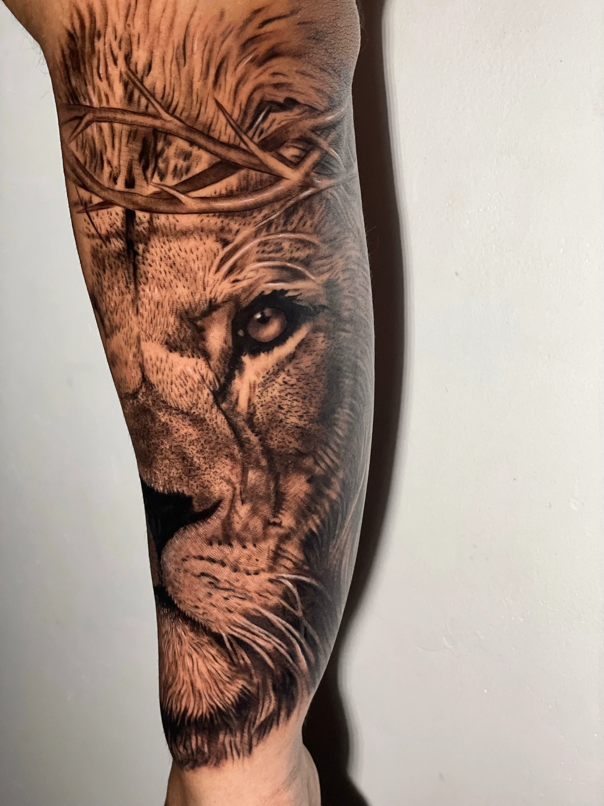
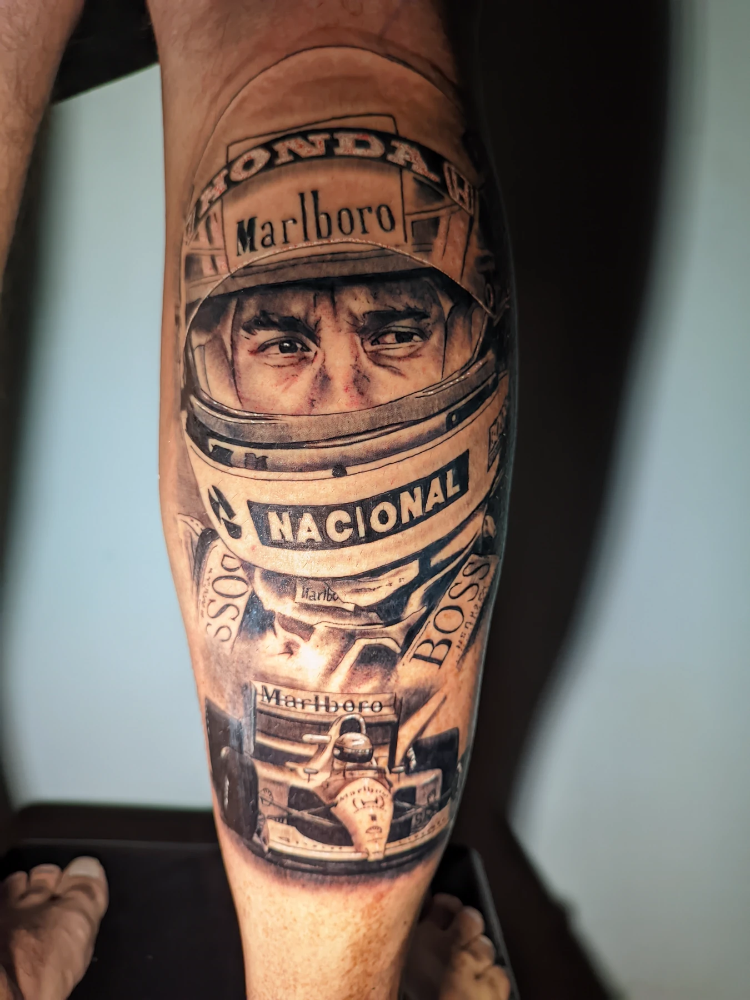

Realismo em tatuagem: o que é e como escolher
Realismo é luz e sombra sem contorno — e é o estilo em que tamanho, referência e experiência do tatuador mais pesam no resultado.

- Realismo é técnica: sem contorno, só luz, sombra e textura.
- Preto e cinza é a paleta. Dá pra ter realismo em preto e cinza ou colorido.
- Realismo precisa de espaço — detalhe pequeno demais some com os anos.
- Veja fotos cicatrizadas do tatuador, não só recém-feitas.
O realismo é um dos estilos que mais chamam atenção. Quando funciona, a tatuagem parece uma foto na pele. Mas é também o estilo em que mais coisa pode dar errado: tamanho pequeno demais, referência ruim ou contraste fraco fazem o trabalho perder a força depois de cicatrizado.
O que define o realismo
A diferença principal está no contorno. Em boa parte dos estilos, uma linha marca o desenho. No realismo, não: a forma aparece só pela passagem do claro pro escuro, como numa fotografia. Pelo de animal, pele de rosto, pétala de rosa, metal — tudo é construído com sombra e textura.
É por isso que ele funciona tão bem pra animais, retratos e elementos da natureza, e por isso exige tanto de quem tatua.
Realismo é a mesma coisa que preto e cinza?
Não, e essa confusão é comum. Preto e cinza é a paleta: só tinta preta, em diluições diferentes. Realismo é o jeito de desenhar. Dá pra fazer realismo em preto e cinza, realismo colorido, e também preto e cinza com contorno, que não é realismo.
Os trabalhos de realismo do meu portfólio são, na grande maioria, em preto e cinza — dá pra ver todos na galeria de preto e cinza.

Retrato na panturrilha e onça na coxa: regiões grandes e planas, que dão espaço pro detalhe.
Por que o tamanho importa tanto
A pele não é papel. Com os anos, a tinta se espalha um pouquinho dentro dela. Num desenho com contorno isso quase não aparece; no realismo, onde tudo depende de pequenas diferenças de tom, detalhe apertado vira mancha.
Na prática: um rosto do tamanho de uma moeda não segura olhos, nariz e boca por muito tempo. Quanto mais detalhe a referência tem, maior a tatuagem precisa ser. Um bom tatuador vai te dizer isso antes — mesmo que signifique uma peça maior ou menos elementos.
Onde o realismo fica melhor
Regiões grandes e mais planas dão o melhor resultado: antebraço, panturrilha, coxa, braço e costas. Áreas muito curvas ou que dobram, como cotovelo e joelho, distorcem a imagem. E regiões de muito atrito, como mãos e pés, perdem detalhe mais rápido.
Que referência levar
Quanto melhor a foto, melhor o resultado. O que ajuda:
- Boa resolução — nada de print pixelado ou imagem muito comprimida.
- Luz vindo de um lado, que cria volume. Foto com flash de frente deixa tudo chapado.
- Foco no que importa: se é um retrato, o rosto nítido.
- Contraste entre claro e escuro.
Você não precisa chegar com a imagem pronta. Traz a referência que salvou e eu adapto pro seu corpo: tamanho, enquadramento, posição e onde ficam as áreas escuras. Se a foto não tiver detalhe suficiente pro tamanho que você quer, eu te aviso antes de marcar.
Quantas sessões leva
Peças pequenas e médias costumam sair em uma sessão. Uma peça grande — um fechamento de braço, as costas — pode sair numa sessão longa ou ser dividida, em dias seguidos ou com intervalo, dependendo do tamanho e do detalhe. Expliquei por que em quantas sessões leva uma tatuagem grande.
Como escolher o tatuador pra realismo
- Peça fotos cicatrizadas. Tatuagem recém-feita sempre parece mais intensa. O que mostra a qualidade é como ela ficou meses depois.
- Procure trabalhos no mesmo tema que você quer: animal, retrato, flores.
- Observe o contraste. Realismo bom tem pretos profundos e claros limpos, não só cinza médio.
- Veja se ele fala de tamanho com você. Quem aceita qualquer tamanho sem comentar não está pensando no resultado daqui a cinco anos.
Pra ir mais preparado, veja também o que perguntar ao tatuador antes de marcar.
Como manter o realismo bonito
O maior inimigo do realismo é o sol: ele desbota os tons claros primeiro e o desenho perde volume. Depois de cicatrizada, protetor solar na tatuagem sempre que ela ficar exposta. Os primeiros cuidados estão em como cuidar da tatuagem nos primeiros 15 dias.